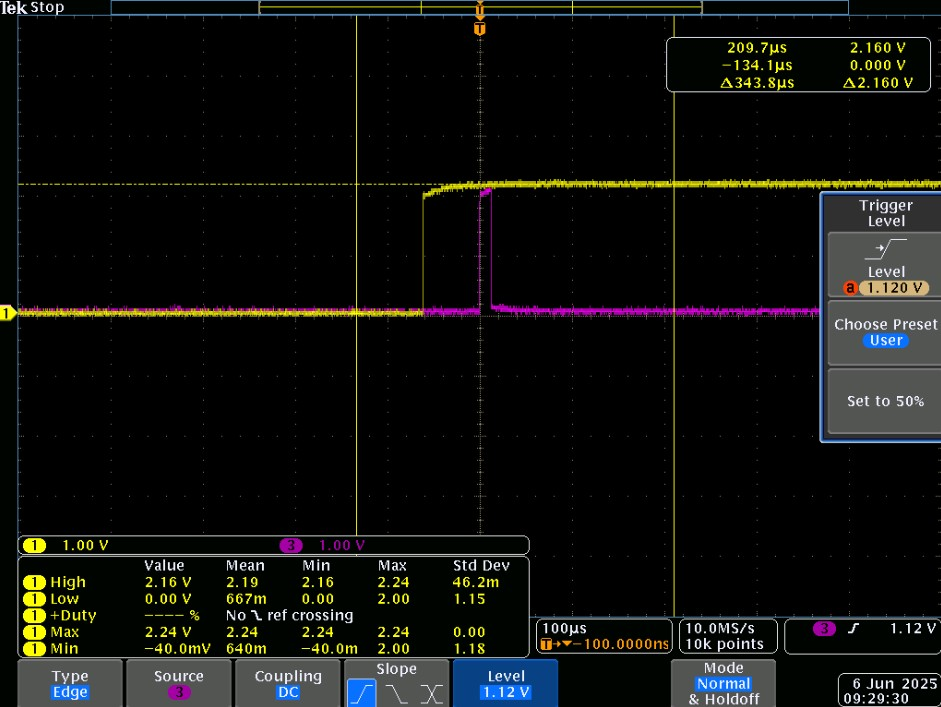

Carte de contrôle RF (Projet ALMA)
Automatisation de tests pour l'astrophysique
Stage au Laboratoire d'Astrophysique de Bordeaux (LAB).
Mission : Développement d'un banc de test automatisé pour le Laboratoire d'Astrophysique de Bordeaux. L'objectif : concevoir une carte électronique pilotant un atténuateur RF de précision pour caractériser les futurs numériseurs du télescope ALMA.
Carte shield finale assemblée
Contexte scientifique : ALMA2030
Qu'est-ce qu'ALMA ?
L'Atacama Large Millimeter/submillimeter Array (ALMA) est le radiotélescope le plus puissant du monde. Situé à 5000m d'altitude au Chili (plateau de Chajnantor), il utilise 66 antennes qui fonctionnent ensemble par interférométrie pour observer l'univers froid (nuages de gaz, formation d'étoiles) dans les ondes millimétriques.
L'enjeu du stage : ALMA 2030 (WSU)
Pour rester à la pointe, l'observatoire lance le programme Wideband Sensitivity Upgrade (WSU) afin de doubler la bande passante et la sensibilité des récepteurs.
Le laboratoire (LAB) développe de nouveaux numériseurs (ADC). Pour les valider, il faut injecter un bruit blanc Gaussien dont la puissance est contrôlée avec une extrême précision. C'est là que ma carte intervient : elle pilote un atténuateur RF numérique pour calibrer ce signal de test.
Synoptique de la chaîne de test RF.
1. Simulation critique & Apprentissage LTSpice
Ce projet m'a permis d'acquérir une compétence technique majeure non vue en cours : l'utilisation avancée de LTSpice pour la validation temporelle.
Le problème : L'atténuateur RF (ADRF5720) est un composant coûteux et fragile. Sa documentation technique impose une contrainte stricte : la tension négative (VSS = -3.3V) doit être établie avant la tension positive (VDD = +3.3V) lors de l'allumage. Si cette séquence n'est pas respectée, le composant grille.
Ma solution : J'ai modélisé l'ensemble du circuit d'alimentation (pompe de charge + commutateurs) sur LTSpice. J'ai simulé le régime transitoire à l'allumage pour dimensionner précisément les constantes de temps (réseaux RC) pilotant les transistors MOSFET. Cela m'a permis de garantir que le VDD ne monte que 50ms après le VSS.

Simulation du séquençage d'alimentation VDD (LTSpice)
2. Conception matérielle
Réalisation d'un shield 2 couches (Top/Bottom) compatible STM32 Nucleo et Arduino Uno. Tous les composants sont implantés sur la face Top uniquement pour faciliter la soudure manuelle.
Points clés de la conception :
- Nouveau logiciel : J'ai appris à utiliser Fusion 360 en autonomie (différent de KiCad/Proteus vus à l'IUT) pour le routage et l'intégration mécanique.
- Audits de vérification : J'ai organisé des revues de projet avec mes collègues pour valider le schéma et le routage avant fabrication, une étape cruciale en milieu industriel pour éviter les erreurs coûteuses.
- Intégrité du signal : Plan de masse soigné pour limiter le bruit sur les lignes de commande numérique.
3. Développement logiciel & architecture
Architecture firmware (C++)
J'ai conçu un firmware robuste capable de fonctionner indifféremment sur STM32 (CubeIDE) ou Arduino. Le code gère :
- La réception des commandes série caractère par caractère.
- L'analyse syntaxique (parsing) pour extraire les valeurs numériques.
- La gestion des erreurs : renvoi de codes (ERR1 à ERR5) si la commande est inconnue ou la valeur hors plage (0-31.5 dB).
- Le pilotage des 6 bits parallèles via des opérations bit-à-bit (bitwise) pour une exécution rapide.
Interface de contrôle (Python)
Pour faciliter l'usage par les chercheurs, j'ai développé un script Python utilisant la bibliothèque PySerial.
Il intègre un fichier de configuration Parameter.json permettant de modifier le port COM et les messages d'erreur sans toucher au code source. Une fonction "Série" permet d'automatiser des rampes de mesure.
Dictionnaire de commandes implémenté
| Commande | Syntaxe | Description |
|---|---|---|
| att | att |
Retourne la valeur actuelle de l'atténuation. |
| att (set) | att <valeur> |
Définit l'atténuation (ex: att 10.5). Plage : 0 à 31.5 dB (pas de 0.5). |
| power | power |
Retourne l'état de l'alimentation (ON/OFF). |
| power (set) | power on / off |
Active ou désactive l'alimentation de l'étage RF. |
| serie | serie |
Lance une séquence automatique de mesures paramétrable. |
| exit | exit |
Arrête le script et éteint proprement la carte. |
4. Fabrication, Validation & Bilan
Assemblage et Fabrication
J'ai réalisé l'assemblage de la carte en utilisant les équipements de l'IUT. Pour les composants CMS, j'ai utilisé une machine de placement manuel (Pick & Place) avant de passer la carte au four à refusion. J'ai ensuite finalisé la carte par le brasage manuel des composants traversants.
Vérification des performances
La validation s'est effectuée à l'oscilloscope. J'ai constitué un dossier de vérification regroupant toutes les preuves : analyse des fronts montants/descendants, respect des timings critiques entre VDD et VSS (séquençage), et validation individuelle des bits d'atténuation.
Apprentissage par l'erreur (Maintenance)
La phase de mise au point a été très formatrice. J'ai été confrontée à deux problèmes concrets :
1. Défaut de fabrication/conception : Malgré les audits, une erreur de routage a court-circuité les plans de masse et de 5V (non vue au DRC). J'ai dû analyser le schéma, localiser le défaut au multimètre et intervenir physiquement en grattant le vernis pour isoler les pistes.
2. Réparation minutieuse : Lors du soudage manuel, une LED 0402 a été endommagée par surchauffe. J'ai dû effectuer une opération de maintenance corrective sous binoculaire pour la remplacer.

Assemblage mixte de la carte
Visualisation d'un bit d'atténuation et du Latch Enable
Environnement technique
Outils professionnels utilisés pour la réalisation de ce projet :
Mobilisation des compétences
Ce stage a été l'occasion de mettre en pratique l'ensemble des compétences du BUT GEII dans un contexte professionnel exigeant. Le graphique ci-contre illustre la répartition de l'effort fourni sur les différents pôles d'activité.
Livrables et passation
Afin d'assurer la pérennité du projet au laboratoire, j'ai constitué un dossier de passation complet incluant les codes sources commentés, les fichiers de fabrication et les manuels utilisateurs ci-dessous.
Code Arduino (.ino)
Firmware de la carte.
Config STM32 (.ioc)
Configuration CubeMX.
Script Python (.py)
Interface de contrôle.
Config JSON (.json)
Paramètres de l'interface.